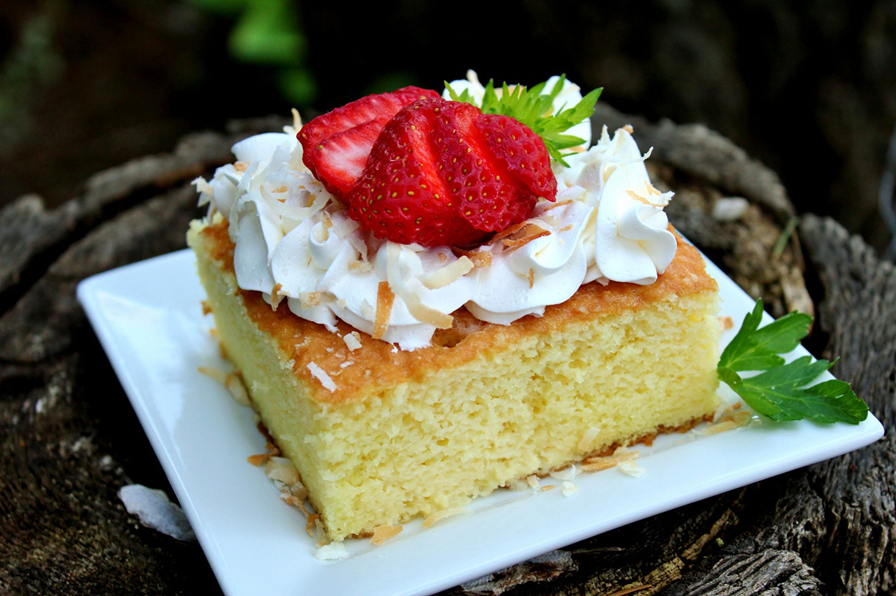

Three Milk Cake

Description
Is a sponge cake soaked in a mixture of three kinds of milk, topped with
whipped cream and strawberries (optional).
Ingredients
- 6 eggs, separated
- 1 cup white sugar
- 1 cup all-purpose flour
- 1 tablespoon baking powder
- ½ cup milk
- 2 teaspoons vanilla extract
- 1 cup heavy whipping cream (Optional)
- 1 (14 ounce) can sweetened condensed milk
- 1 (12 ounce) can evaporated milk
- 1 cup whipped cream (Optional)
- 1 cup sliced fresh strawberries (Optional)
Steps
- Preheat oven to 350 degrees F (175 degrees C).
- Grease a 10x15-inch baking dish.
-
Beat egg whites in a large mixing bowl with an electric mixer on high
until stiff peaks form; gradually beat in sugar until mixture is glossy.
Beat in egg yolks, one at a time, combining each yolk before adding the
next. Reduce mixer speed to medium and add flour, about 1 tablespoon at
a time, to the mixture, beating continuously; beat in baking powder,
milk, and vanilla extract. Pour batter into prepared baking dish.
-
Bake in the preheated oven until cake is lightly browned and a toothpick
inserted in the middle comes out clean, about 25 minutes. Let cake cool
for 15 minutes.
-
Pour 1 cup cream, sweetened condensed milk, and evaporated milk in a
blender and pulse several times until well blended. Pour three-milk
mixture evenly over the cake. Refrigerate cake until cold and the milk
mixture has soaked in, at least 1 hour.
-
Cut in squares and top each serving with a dollop of whipped cream and a
few sliced strawberries. Refrigerate leftovers.
Go back to main page